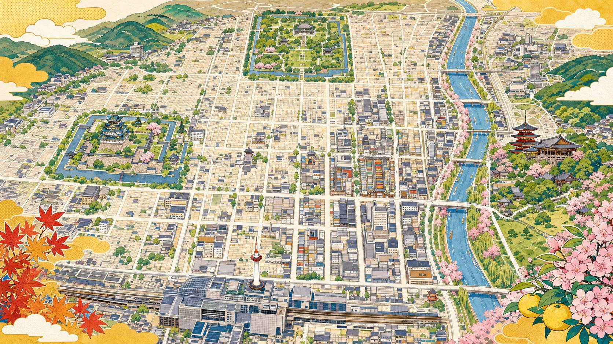

Kyoto Dialect, Decoded
洛中リアル・京ことば辞典。
おおきに、ぶぶ漬け、よう言わんわ。直訳だけやのうて、言葉の奥にあるニュアンスまで。京都ことばの奥ゆかしさと、街のリアルな空気を味わえます。

いま解読されてる京ことば
洛中ことば地図
現在の京都中心部の位置関係をベースに、地名や名所にまつわる京ことばを重ねて眺められる地図です。気になる札を押すと、その場所にまつわるフレーズが開きます。
デフォルメした概略地図です